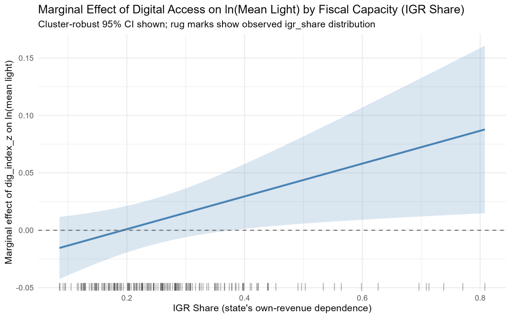
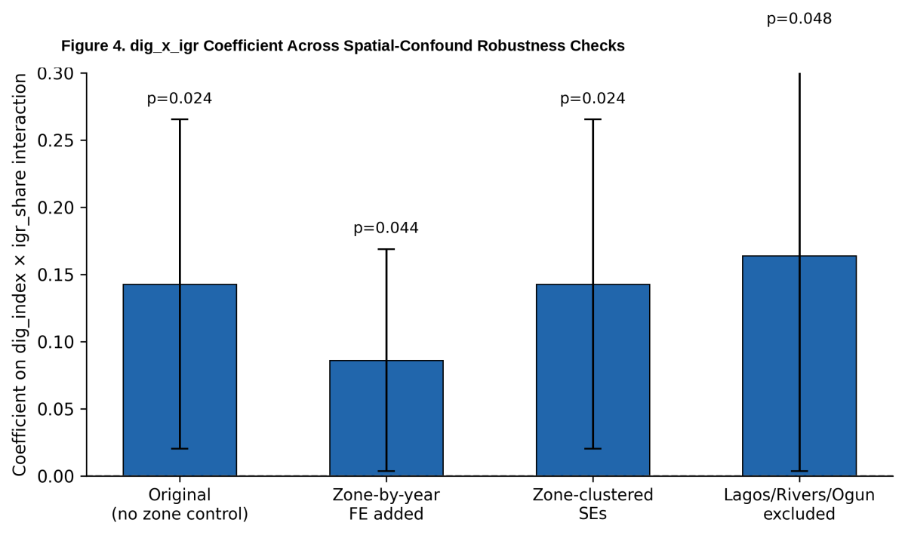
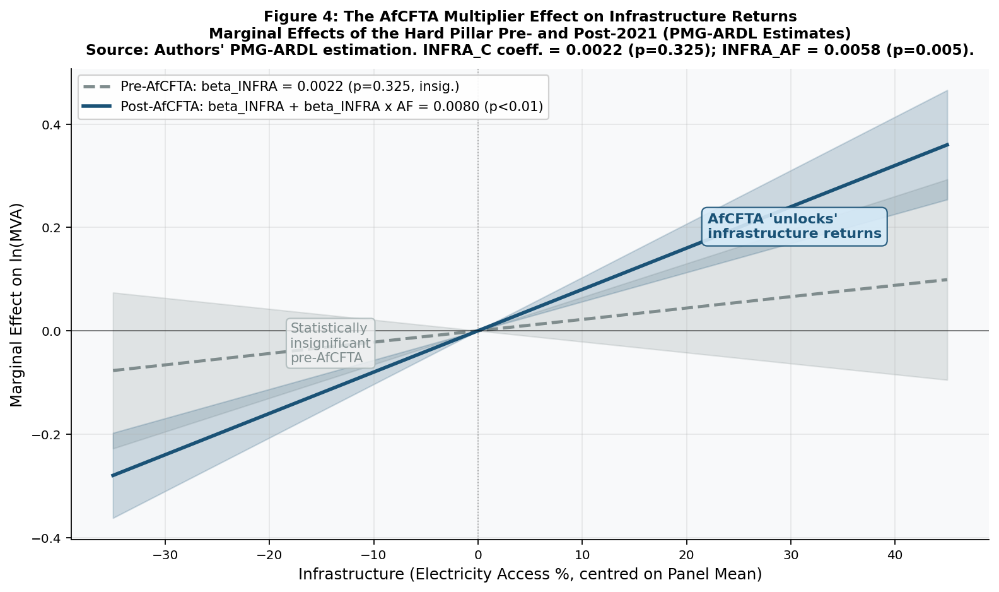
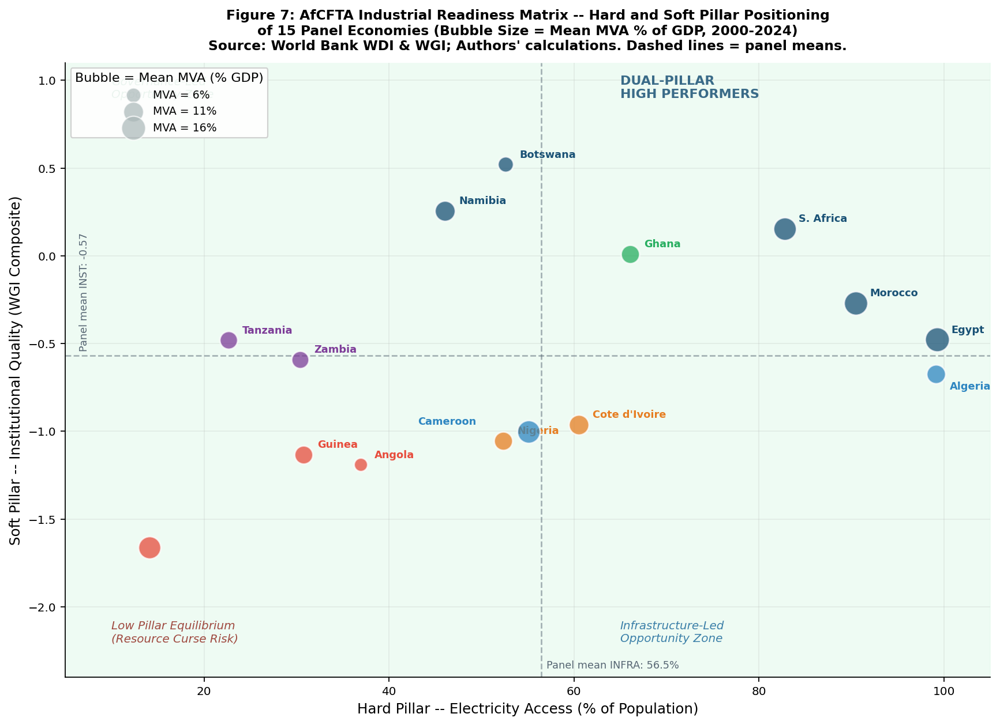

Awka, Anambra State, Nigeria
I grew up watching Onitsha's main market move millions of naira a day, while many households nearby never felt the benefit. That contradiction still drives my work: why doesn't intense economic activity translate into broad-based development?
Analyst, Anambra State Investment Promotion and Protection Agency (ANSIPPA) — PPP evaluation, investment policy & institutional economics research
37 cells, one per Nigerian state + FCT — an illustrative echo of the spatial clustering explored in the research below, not literal data.
I read development economics through an institutionalist and political-economy lens — attentive to power asymmetries, colonial legacies, environmental constraints, and the way markets are shaped by social and political forces rather than existing in a vacuum. My research interests sit across development economics, institutional economics, political economy, infrastructure and development, and poverty, migration and inequality.
I graduated from Nnamdi Azikiwe University, Awka with a B.Sc. in Economics (Second Class, Upper Division), ranked 15th of 119 in my cohort — the top 13%. My undergraduate thesis used ARDL modelling in EViews to study migration and economic growth in Nigeria, finding a negative short-run effect on GDP growth alongside a positive long-run effect driven by remittances — a result that raised as many institutional questions as it answered, about when remittances fund structural transformation versus simple consumption smoothing.
I'm fluent in English and Igbo, and working toward B1+ Spanish.
Two working papers with my academic mentor, both applying panel econometrics to structural questions in African development.
A panel of Nigeria's 36 states + the FCT (2012–2023), combining VIIRS night-time-light data with telecoms, socioeconomic, and fiscal records. The planned three-indicator Digital Adoption Index was rejected after diagnostics showed near-perfect collinearity (r > 0.99), so digital access is measured as broadband penetration alone. Two-way fixed-effects models find no unconditional link between digital access and regional economic activity — but a state's fiscal capacity (its internally generated revenue share) does condition the relationship, becoming positive and significant above roughly the 30th percentile of fiscal capacity. The most robust finding needs no interaction term at all: regional economic activity is strongly and persistently clustered in geographic space (λ = 0.61–0.73, p < 0.001) across four different spatial weighting schemes.

Below ~19% fiscal self-sufficiency, more digital access shows no measurable link to regional economic activity. Above it, the relationship turns positive.

The fiscal-capacity effect holds up under zone controls, re-clustered errors, and after dropping the three highest-capacity states.
Using Pooled Mean Group Panel ARDL across 15 resource-rich African economies, this paper tests whether the AfCFTA (operational since January 2021) acts as an independent catalyst for industrialisation or a structural multiplier of capacity that already exists domestically — the Complementarity Hypothesis. Institutional quality is the dominant long-run driver of manufacturing value-added, and physical infrastructure — historically insignificant given mine-to-port deployment patterns — becomes highly significant only after AfCFTA activation, suggesting continental market scale unlocks dormant energy and logistics assets rather than creating new ones outright. Dutch Disease effects appear in sign but are statistically muted. A placebo test confirms the 2021 break is specific to AfCFTA's operationalisation, not a general trend.

Before 2021, infrastructure had no measurable link to manufacturing value-added. After AfCFTA's activation, the same infrastructure starts to pay off.

Positioning all 15 panel economies by hard (infrastructure) and soft (institutional) pillar strength — four distinct industrialisation pathways emerge.
B.Sc. Economics (2nd Class, Upper Division)
Nnamdi Azikiwe University, Awka — Class Rank 15/119 (Top 13%), 2023
McKinsey Forward Program (2024) · Google Data Analytics (2022) · Excel: Economic Analysis & Data Analytics (2022) · Associate Member, Nigerian Economic Society (2025–)
Open to conversations on PPP structuring, investment research, institutional and spatial economics, or research collaboration.